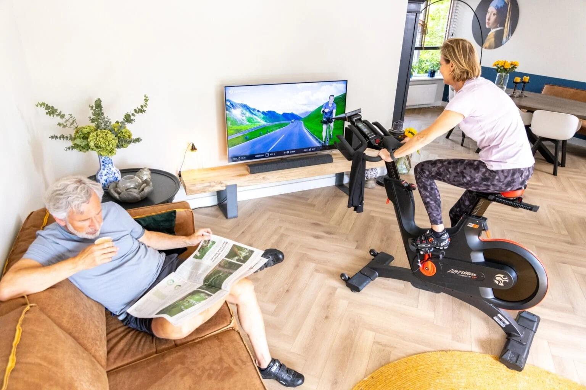

Cardio Training
Cardio training can take many forms. Here are some popular options, with outdoor workouts being more common in summer and indoor workouts gaining popularity in winter:
Outdoor:
Running –
Ideal for those who enjoy being outdoors and want an efficient calorie burner.
Cycling –
Great for building endurance while being easy on the joints, whether outdoors or on an indoor bike.
Walking –
Perfect for beginners or those recovering from an injury.
At Home:
Indoor Cycling –
A convenient way to exercise at home. Platforms like CycleMasters offer a variety of guided workouts with motivational instructors. This is an excellent choice for those with limited time who still want an effective workout.
Skipping Rope
Burns a high number of calories and improves coordination. Be mindful that high-intensity skipping can be tough on your knees and ankles.
Stair Climbing –
A simple yet effective way to strengthen your legs and improve endurance.
By mixing different exercises, you can keep your workouts fun.

Day 1: 20 minutes of indoor cycling at a steady pace, using a beginner-friendly guided session.
Day 2: 15 minutes of yoga focusing on stretching and relaxation.
Day 3: 20 minutes of cycling or skipping at a comfortable pace.
After about three weeks, you can start increasing the intensity by either raising the resistance or extending the sessions to 30 minutes.